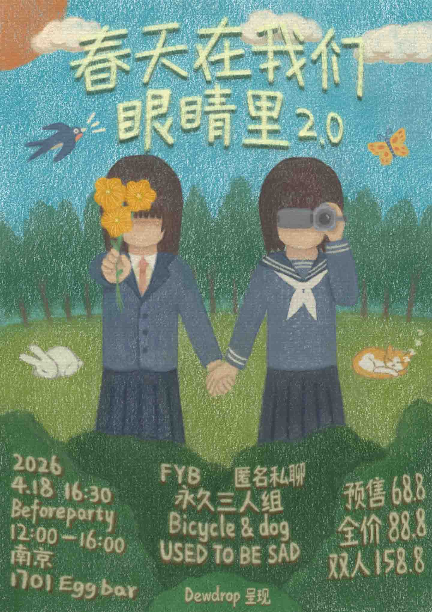

UTBS EP1

2025/04/18-春天在我们的眼睛里

25/08/24-昨日世界meet new friend南京站

25/10/10-叶子落下的时候

2025/10/25-「风来了」NoStage ！

2025/11/19-进入这一分钟

25/11/23-Japanese Football中国巡演上海站

2026/03/28-中西部情绪麻将2026春巡

2026/04/05-SonicRevolution音速革命3.0

26/04/18-春天在我们的眼睛里2.0
